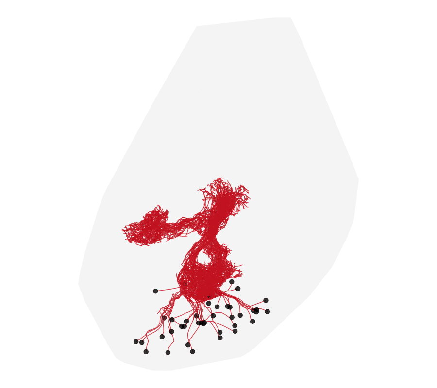

Symmetrising the L1 larval CNS and finding left-right cognates
Source:vignettes/l1-symmetrise-cognates.Rmd
l1-symmetrise-cognates.RmdGoal
The L1 larval connectome — the first-instar Drosophila larval CNS, manually reconstructed and hosted openly by Virtual Fly Brain — is very nearly bilaterally symmetric. This vignette builds a left-right symmetrising diffeomorphism for the whole L1 CNS (brain and ventral nerve cord) from its matched left/right neuropil compartments, uses it to carry structures across the midline onto their contralateral partners, and then finds cognate neuron pairs by morphological similarity (NBLAST) once the two sides are in register.
Ten years ago this package was an L1-only tool: it shipped hard-wired
helpers — apply.mirror.affine(),
symmetrisel1(), otherside() for the
symmetrising map, and findcognate() /
checkL1cognates() for the left-right cognate search — each
backed by a bundled transform and a bespoke L1 NBLAST scoring matrix.
deformetricar is no longer L1-specific, so those functions
are gone from the package. This vignette rebuilds them from
scratch, as a few lines each over the general
deformetricar (and nat.nblast) API, driven by
the live VFB dataset. That is the point of the walkthrough: the five
functions are the deliverable.

1. Fetch the L1 CNS and its left/right compartments (CATMAID)
The L1 larval CATMAID is public and read-only. It ships the whole-CNS
surface (cns) plus a set of bilateral neuropil
volumes — the two brain hemispheres, the SEZ, and the
thoracic/abdominal VNC segments (T1–T3,
A1–A8) — each as a
_left/_right pair. Those matched pairs are the
anchors that teach the warp what “symmetric” means; we take a spread of
them down the whole length of the CNS.
l1 <- catmaid_connection(server = "https://l1em.catmaid.virtualflybrain.org/")
vl <- catmaid_get_volumelist(conn = l1)
# Deformetrica needs ~O(1-100) coordinates: work in um, not the raw nm.
nm2um <- function(x) { xyzmatrix(x) <- xyzmatrix(x) / 1000; x }
getvol <- function(name) nm2um(Rvcg::vcgClean(
as.mesh3d(catmaid_get_volume(vl$id[vl$name == name], conn = l1, rval = "mesh3d")),
sel = 0, silent = TRUE))
cns <- getvol("cns") # the whole CNS surface
pairs <- c("Brain Hemisphere", "SEZ", "T1", "T2", "A3", "A6") # head -> tail spread
lname <- function(p) if (p == "Brain Hemisphere") "Brain Hemisphere left" else paste0(p, "_left")
rname <- function(p) if (p == "Brain Hemisphere") "Brain Hemisphere right" else paste0(p, "_right")
L <- setNames(lapply(pairs, function(p) getvol(lname(p))), pairs)
R <- setNames(lapply(pairs, function(p) getvol(rname(p))), pairs)2. apply.mirror.affine() — reflect one side onto the
other
The linear half of a symmetrising map. Reflect an object across the
CNS midline plane (so left ↔︎ right), then rigidly affine-align that
reflection back onto the original CNS — this removes the fact that the
specimen’s midline is neither exactly at x = 0 nor exactly
axis-aligned. Everything downstream rides this same
transform, so we fit it once (from the whole CNS) and wrap it as a
function.
midX <- mean(range(xyzmatrix(cns)[, 1])) # specimen midline (x)
mirror <- function(m) { # reflect across x = midX
xyzmatrix(m)[, 1] <- 2 * midX - xyzmatrix(m)[, 1]
if (!is.null(m$it)) m$it <- m$it[c(2, 1, 3), ] # keep surface winding outward
m$normals <- NULL; m
}
pre <- affine_prealign(mirror(cns), cns, type = "rigid") # reflection -> original CNS
# apply.mirror.affine(x): reflect x, then apply that same rigid alignment.
apply.mirror.affine <- function(x) pre$apply(mirror(x))3. Fit the symmetrising diffeomorphism from the matched compartments
The affine cannot capture the specimen’s non-rigid
left-right asymmetry (a slightly bent VNC, one hemisphere fuller than
the other). A diffeomorphism can. We fit one
diffeomorphism to the whole set of matched compartments at once with
deformetrica_register_multi(), in both
directions so the result is genuinely symmetric: each
mirror-affined right compartment is driven onto its
left partner, and each mirror-affined left onto its
right. Registering the compartment surfaces (not the
~thousands of neurons) is what keeps this cheap and robust.
dec <- function(m, n = 700L) Rvcg::vcgQEdecim(m, tarface = n)
srcs <- tgts <- list()
for (p in pairs) {
srcs[[paste0(p, "_R")]] <- dec(apply.mirror.affine(R[[p]])); tgts[[paste0(p, "_R")]] <- dec(L[[p]])
srcs[[paste0(p, "_L")]] <- dec(apply.mirror.affine(L[[p]])); tgts[[paste0(p, "_L")]] <- dec(R[[p]])
}
kw <- sqrt(sum((apply(xyzmatrix(cns), 2, max) - apply(xyzmatrix(cns), 2, min))^2)) / 12
fit <- deformetrica_register_multi(srcs, tgts, kernel_width = kw, data_sigma = 3,
timepoints = 15L, max_iterations = 40L, device = "auto")4. symmetrisel1() and otherside() — the
full contralateral map
Now compose the two halves. symmetrisel1()
mirror-affines an object and then flows it through the fitted
diffeomorphism — the complete non-linear symmetrisation. Because the
diffeomorphism that makes the CNS symmetric is exactly the map
that carries each structure onto its contralateral partner,
otherside() — “send this neuron to the other side of the
CNS” — is the very same function. (flow = TRUE keeps every
geodesic timepoint, for the animation; the default returns just the
endpoint.)
symmetrisel1 <- function(x, flow = FALSE)
deformetrica_shoot(apply.mirror.affine(x), fit$control_points, fit$momenta,
kernel_width = fit$kernel_width, flow = flow)
otherside <- symmetrisel1 # the symmetrising map IS the left<->right mapThese three functions — apply.mirror.affine(),
symmetrisel1(), otherside() — are the modern,
dataset-driven replacements for the old bundled helpers. They accept
anything with xyzmatrix() coordinates: a points matrix, a
mesh3d, a neuron or a
neuronlist.
5. Watch the map carry the right cells onto their left cognates
The whole L1 CNS is so nearly symmetric that the surface
deformation is only a few µm — true to the biology, but too subtle to
watch. The striking thing to see is the map applied to
cells: send the right Kenyon cells across the midline with
otherside() and watch them land on their left partners. We
animate the full journey in two acts — the
mirror-affine reflection (a big, ~50 µm cross-midline
sweep) and then the diffeomorphic flow — over a static
grey CNS, viewed along its long axis (first principal
component, head-to-tail) so the bilateral symmetry is edge-on. The left
Kenyon cells (blue) are drawn static as the target the right ones (rose)
should meet.
# One Kenyon-cell fetcher for the whole vignette: n = NULL keeps them all (§6),
# n = 36 takes a legible subset for the animation.
getkc <- function(ann, n = NULL) {
x <- read.neurons.catmaid(catmaid_skids(ann, conn = l1), conn = l1)
x <- nat::nlapply(nat::nlapply(x, nat::resample, stepsize = 1500), nm2um)
if (!is.null(n) && length(x) > n) x[round(seq(1, length(x), length.out = n))] else x
}
kcR <- getkc("annotation:Kenyon Cell right", n = 36)
kcL <- getkc("annotation:Kenyon Cell left", n = 36)
# the two acts of otherside(): the mirror-affine sweep, then the diffeomorphic flow
interp <- function(o, from, to, n) lapply(seq(0, 1, length.out = n),
function(a) { x <- o; xyzmatrix(x) <- (1 - a) * from + a * to; x })
aff_kc <- apply.mirror.affine(kcR) # reflect + rigid
act1 <- interp(kcR, xyzmatrix(kcR), xyzmatrix(aff_kc), 12) # the cross-midline sweep
act2 <- deformetrica_shoot(aff_kc, fit$control_points, fit$momenta,
kernel_width = fit$kernel_width, flow = TRUE) # the diffeomorphism
flow_kc <- c(act1, act2)
# each Kenyon cell is rooted at its soma, so its root point IS the cell body: draw
# those as circles (the moving right somata, the static left ones) with `points`.
soma_of <- function(nl) do.call(rbind, lapply(nl, function(n) xyzmatrix(n)[nat::rootpoints(n)[1], , drop = FALSE]))
somata_R <- lapply(flow_kc, soma_of) # per-frame, move with the sweep
somata_L <- soma_of(kcL) # static targets
# view: long axis (PC1) vertical, next axis horizontal, shortest into the screen
pc <- prcomp(xyzmatrix(cns))$rotation
RM <- diag(4); RM[1, 1:3] <- pc[, 2]; RM[2, 1:3] <- -pc[, 1]; RM[3, 1:3] <- pc[, 3]
ggplot_flow_gif(list(KC_right = flow_kc),
cols = list(KC_right = "#FF5C8A"), alpha = c(KC_right = 0.35),
targets = list(KC_left = kcL), target_cols = c(KC_left = "#2C7FB8"),
target_alpha = 0.28,
points = list(KC_right = somata_R, KC_left = somata_L),
point_cols = c(KC_right = "#FF5C8A", KC_left = "#2C7FB8"),
point_size = 3, point_alpha = 0.85,
volume = cns, volume_col = "grey65", volume_alpha = 0.10,
rotation_matrix = RM, delay = 0.12,
file = "l1_symmetrise.gif") # somata as circles; grey CNS + left KCs as context6. findcognate() and checkL1cognates() —
the cognate search
With a symmetrising map, cognate-finding is direct: send every right
neuron across with otherside(), then NBLAST it against the
left neurons — the top hit is its putative left cognate. Two choices
make this L1-tuned, as the original was:
UseAlpha = TRUE (which up-weights each neuron’s tract-like
backbone), and an L1-scale scoring matrix. NBLAST’s
default matrix is trained on the adult fly, whose neurons are an order
of magnitude larger; the L1 matrix bins distances from fractions of a
micron (its first breaks are 0.75, 1.5 µm, versus 2.5 µm for the adult),
so L1 near-misses are scored on the right scale. Build one from
provisional cognate pairs with
nat.nblast::create_scoringmatrix() at those L1
distbreaks; here we pass the adult alpha matrix
smat_alpha.fcwb to keep the walkthrough self-contained.
library(nat.nblast)
dp <- function(nl) nat::dotprops(nl, resample = 0.5, k = 5, .progress = "none")
# findcognate(x, db_dps): carry x across with otherside(), NBLAST against the
# contralateral database, return each neuron's ranked cognates with scores.
findcognate <- function(x, db_dps, smat = smat_alpha.fcwb, n = 5) {
q <- dp(otherside(x))
sc <- nblast(q, db_dps, smat = smat, normalised = TRUE, UseAlpha = TRUE, .progress = "none")
lapply(stats::setNames(colnames(sc), colnames(sc)), function(j) {
o <- order(sc[, j], decreasing = TRUE)[seq_len(n)]
data.frame(cognate = rownames(sc)[o], score = round(sc[o, j], 3))
})
}
KCR <- getkc("annotation:Kenyon Cell right") # full sets (§5 animated a subset)
KCL <- getkc("annotation:Kenyon Cell left")
kcl_dps <- dp(KCL)
cog <- findcognate(KCR, kcl_dps) # ranked left cognates per right KC
cog[[1]] # top-5 cognates + scores for one right KCReciprocal best hits. A cognate call is trustworthy when the two neurons are each other’s top match both ways — right→left and left→right agree. That mutual-best-hit set is the confident left-right mapping, and its size is a clean score for the whole symmetrisation.
top1 <- function(res) vapply(res, function(d) d$cognate[1], character(1))
r2l <- top1(findcognate(KCR, kcl_dps)) # right skid -> best left skid
l2r <- top1(findcognate(KCL, dp(KCR))) # left skid -> best right skid
rbh <- names(r2l)[l2r[r2l] == names(r2l)] # mutual top-1 pairs
sprintf("%d / %d right Kenyon cells have a reciprocal-best-hit left cognate",
length(rbh), length(r2l))checkL1cognates() — the old interactive
rgl inspector, as a static nat.ggplot panel: a right query
carried across the midline (rose) over its top-ranked left cognate
(blue), viewed along the CNS long axis (the RM from
§5).
checkL1cognates <- function(right_skid, db_right, db_left, cog, RM) {
q <- otherside(db_right[right_skid])
best <- db_left[cog[[right_skid]]$cognate[1]]
ggplot2::ggplot() +
nat.ggplot::geom_neuron(q, rotation_matrix = RM, cols = c("#FF5C8A", "#FF5C8A")) +
nat.ggplot::geom_neuron(best, rotation_matrix = RM, cols = c("#2C7FB8", "#2C7FB8")) +
ggplot2::coord_fixed() + ggplot2::theme_void()
}
checkL1cognates(names(rbh)[1], KCR, KCL, cog, RM) # inspect the first confident pairThe original ran this over the whole L1 CNS — all
~4,000 reconstructed neurons at once, not just the Kenyon cells — to
build a left-right map for the entire connectome.
findcognate() scales straight to that: pass the whole-CNS
dotprops as db_dps.
Notes
-
Why compartments, not neurons, drive the fit.
Registering a handful of decimated compartment surfaces is
cheap and numerically stable; fitting to thousands of neuron skeletons
at once is neither. The neurons are what we apply the finished
map to — that is always cheap (
deformetrica_shoot()). -
The five functions are the point.
apply.mirror.affine(),symmetrisel1(),otherside(),findcognate()andcheckL1cognates()are just closures overpre,fitand (for the search) a scoring matrix. Swap the dataset (or the compartment list) and you have a symmetriser + cognate-finder for any other nervous system — nothing here is L1-specific any more, which is exactly why they no longer live in the package. -
L1-scale NBLAST. The original shipped a bespoke L1
scoring matrix because the default is trained on adult-fly neurons ~10×
larger; on L1 you want distance bins that start below a micron.
UseAlpha = TRUEmatters too — Kenyon cells and VNC tracts are near-parallel bundles, and the alpha term rewards that shared backbone geometry. -
More anchors, better VNC. Add more of the
A1–A8/T1–T3pairs topairsfor a tighter fit along the nerve cord; the original also drove the warp with named fibre tracts (the antennal-lobe tracts, the dorso/ventro-medial/lateral VNC tracts) as extra matched anchors — add any bilateral pair you can name tosrcs/tgts.
See also
The whole-brain and neuropil surface analogues of this workflow are in the mosquito-to-fly and FAFB left-right vignettes.